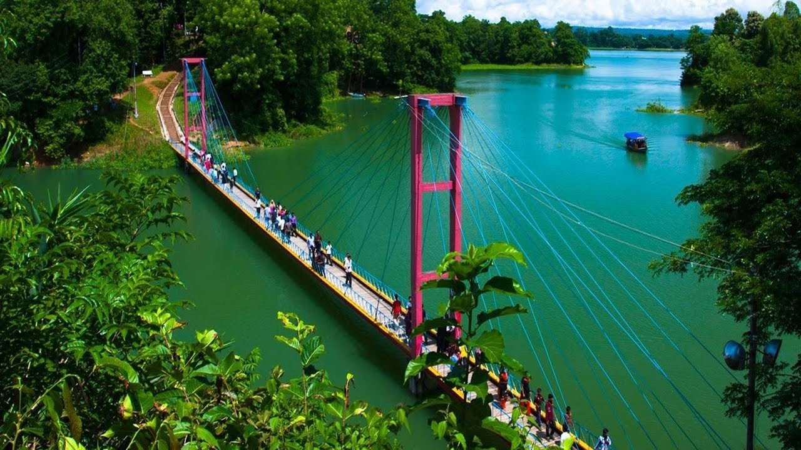

Rangamati

Discover Rangamati
Rangamati is a mesmerizing hill district located in the southeastern part of Bangladesh, celebrated for its natural beauty and serene atmosphere. Major attractions include:
- Kaptai Lake - A vast man-made lake offering boating and fishing opportunities
- Hanging Bridge - A popular landmark and photo spot
- Ethnic Communities - Home to Chakma, Marma, and other indigenous groups
- Tribal Markets - Unique handicrafts and cultural items